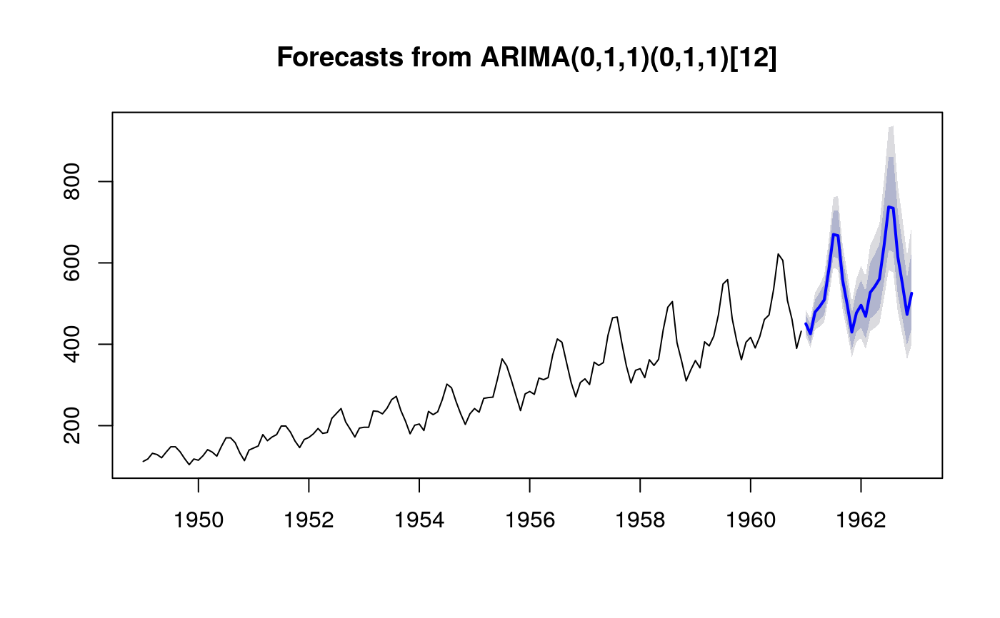

If method=="guerrero", Guerrero's (1993) method is used, where lambda
minimizes the coefficient of variation for subseries of x.
BoxCox.lambda(x, method = c("guerrero", "loglik"), lower = -1, upper = 2)
| x | a numeric vector or time series of class |
|---|---|
| method | Choose method to be used in calculating lambda. |
| lower | Lower limit for possible lambda values. |
| upper | Upper limit for possible lambda values. |
a number indicating the Box-Cox transformation parameter.
If method=="loglik", the value of lambda is chosen to maximize the
profile log likelihood of a linear model fitted to x. For
non-seasonal data, a linear time trend is fitted while for seasonal data, a
linear time trend with seasonal dummy variables is used.
Box, G. E. P. and Cox, D. R. (1964) An analysis of transformations. JRSS B 26 211--246.
Guerrero, V.M. (1993) Time-series analysis supported by power transformations. Journal of Forecasting, 12, 37--48.
lambda <- BoxCox.lambda(AirPassengers,lower=0) air.fit <- Arima(AirPassengers, order=c(0,1,1), seasonal=list(order=c(0,1,1),period=12), lambda=lambda) plot(forecast(air.fit))